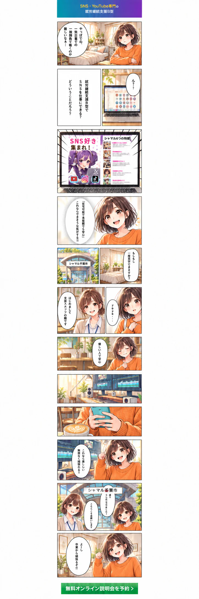

01
プロが直接指導！
専門知識を持ったスタッフが在籍しているので、安心した指導が受けられます。
うつや障がいで就職に悩んでいる方へ
自分のペースで働きながら、
SNS・YouTubeの
就労継続支援B型
好きなことや興味を、無理のない働き方につなげてみませんか。
自分のペースで
在宅で働きたい！
いつもSNSやYouTubeを見ている！
デザインや動画編集を学びたい！
最新のAIで漫画や音楽を作りたい！
SNS・YouTube専門の就労継続支援B型を、漫画でご紹介します。

学ぶことも、働くことも。安心して一歩を踏み出せる環境です。
専門知識を持ったスタッフが在籍しているので、安心した指導が受けられます。
慣れた環境の自宅でできるから、体調や日々のコンディションに合わせて、無理なく作業することが可能です。
高水準の工賃でモチベーションUP!!
作業を楽しみながら、月5万円以上の報酬も可能です。
未経験でも一人ひとりに合ったペースで進められるように丁寧に指導するので安心してください。
安心して働ける職場が見つかるように、一人ひとりの希望や体調に合わせた就職活動の支援を行っています。
興味のある分野から、自分らしい得意を少しずつ増やせます。
ゲーム、アニメ、漫画、ファッション、美容、グルメ、スポーツ、雑学、占い、都市伝説など様々なアカウントを運営します。
Photoshop・Illustrator・Canva等で、サムネイルやバナーをデザインします。
生成AIでキャラクターのイラストしたり、オリジナルの漫画を描いたりします。
PremierePro・CapCutを使用して、テロップやBGMを入れるなど動画編集をします。
生成AIを使って作詞したり、音楽を作曲したりします。
自分のペースを大切にしながら、新しい一歩を踏み出した皆さまの声です。
スタッフの方が優しくサポートしてくれるので安心して働けます。スタッフの方と気軽に話ができて、わからないことも気軽に相談できる環境がありがたいです。簡単な作業から始めましたが、少しずつできることが増えて、自信につながっています。作業を通じて新しいことに挑戦できるのが楽しいです。
自分の体調に合わせて無理なく働けるのが嬉しいです。自分のペースで働けるので安心して通えます。少しずつスキルも身についていると実感できます。社会とのつながりを感じながら、充実した毎日を過ごせるのが嬉しいです。
自分のペースに合わせて教えて貰えるでしっかり学べています。まだ体験中ですが男性のスタッフさんも女性のスタッフさんにもとても優しいです。自分のペースに合わせて教えて貰えるのでしっかり学べています。復習もさせて貰えるので不安感もあまり感じずに進んでいけるのもとても魅力的です。何より本来なら専門的に習わないといけない処を無料で教えて貰えるのは有難いです。
気になる項目をクリックすると回答が開きます。
障がい者手帳をお持ちでない方もご利用できます。お気軽にお問い合わせください。
18歳以上の方で、以下いずれかの条件を満たす方が対象です。
経験豊富なスタッフが指導しますので、未経験の方でもスキルを身に付けることが可能です。
SNSやYouTubeに関連するお仕事になります。具体的には動画編集、デザインなどです。最近は生成AIを使ったお仕事も増えています。
自分の心身の状態に合わせて、利用することが可能です。体調や環境へ慣れることを第一にして、最初は短い時間からの利用にするなどの調整をするもできます。
在宅利用が可能なので、離れた場所に住んでいてもオンラインで利用可能です。
気になることや不安なことを、まずはオンラインで気軽にご相談ください。
詳しい内容を知りたい方は、
無料オンライン説明会にご参加ください。